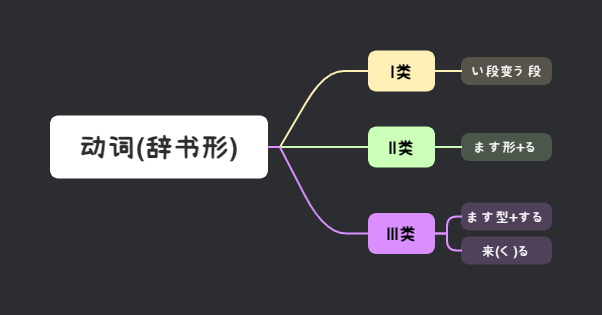

📖 みんなの日本語 第十八課
辞書形・能力・趣味・前｜ことができます・趣味は～ことです・まえに
文法 ①
动词辞书形
动词辞书形的变化规则（从ます形变化）：
| 动词类型 | ます形 → 辞书形 变化规则 | 例子 |
|---|---|---|
| Ⅰ类 | い段 → う段 | 書きます→書く・読みます→読む・話します→話す |
| Ⅱ类 | ます去掉 + る | 食べます→食べる・見ます→見る |
| Ⅲ类 | します→する・きます→くる | 勉強します→勉強する・来ます→来(く)る |

💡 辞书形是字典上记载的原形，也叫基本形。
文法 ②
名词 / 动词辞书形 + ことができます
N / Vことができます
意义：表示“能力/可能”。できます前用「が」。
ミラーさんは日本語ができます。→ 米勒先生会日语。
カードで払うことができます。→ 可以用信用卡付款。
文法 ③
私の趣味は + 名词 / 动词辞书形 + こと + です
趣味は N / Vことです
意义：表达自己的爱好。
私の趣味は音楽です。→ 我的爱好是音乐。
私の趣味は音楽を聞くことです。→ 我的爱好是听音乐。
文法 ④
动词辞书形 / 名词の / 数量词 + まえに
V辞書形 / Nの / 数量詞 + 前に、V
意义：在A之前做B。
寝る前に、本を読みます。→ 睡觉前会看会儿书。
食事の前に、手を洗います。→ 吃饭前先洗手。
田中さんは一時間前に出かけました。→ 田中先生1小时前出去了。
文法 ⑤
なかなか + 否定
なかなか + Vない
意义：表示“很难……/不太能……”。
日本ではなかなか馬を見ることができません。→ 在日本很难看到马。
文法 ⑥
ぜひ
ぜひ + たい / てください
意义：表达强烈愿望，“务必、一定”。
ぜひ北海道へ行きたいです。→ 一定要去北海道。
📌 第十八課 キーワード
辞書形ことができます
趣味前に
なかなかぜひ
📖 语法核心：辞书形・能力可能・爱好表达・之前・なかなか・ぜひ